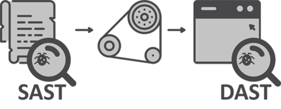
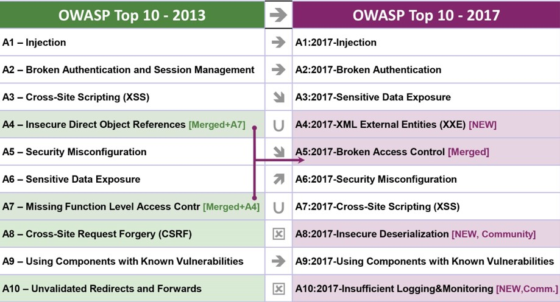
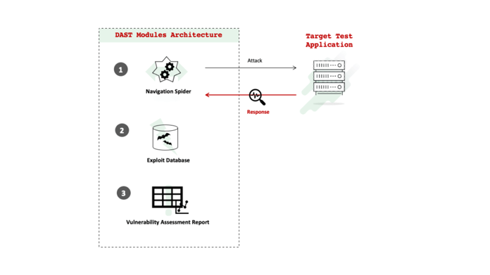
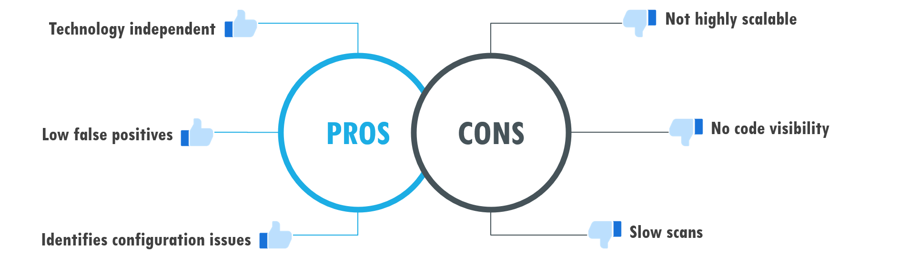

AHI CTF

#Dynamic Application Security Testing
What is DAST?
Dynamic Application Security Testing
Dynamic Application Security Testing หรือ การทดสอบความปลอดภัยของแอปพลิเคชันแบบไดนามิก (DAST) ซึ่ง DAST เป็นการทดสอบความปลอดภัยแบบกล่องดำ หรือ Black box ประเภทหนึ่งซึ่งทำการทดสอบโดยการโจมตีแอปพลิเคชันจากภายนอก
SAST VS DAST

DAST นั้นจะแตกต่างกับ SAST หรือ Static Application Security Testing อย่างชัดเจน สืบเนื่องด้วย Static Analysis เป็นการดู source code ของ Application โดยตรง แต่ Dynamic Analysis จะเน้นดูผลการตอบกลับมาจาก Web Application หลังจากการส่ง Request การโจมตีต่างๆไปยัง Application แทนมากกว่า
OWASP TOP 10
DAST นั้นมีประสิทธิภาพดีมากในการค้นหาปัญหา และช่องโหว่จากภายนอก ซึ่งรวมถึงความเสี่ยงด้านความปลอดภัยหลายประการจาก OWASP TOP 10 เช่น SQL Injection , Cross-site Scripting (XSS)เป็นต้น
How Does DAST Work?
DAST ทำงานอย่างไร?
DAST ทำงานโดยใช้การสแกนอัตโนมัติที่จำลองการโจมตีภายนอกที่เป็นอันตรายบนแอปพลิเคชัน โดยอาจจะนำ payload หรือ Code ที่เป็นอันตรายในการโจมตีมาจาก Exploit DB หรือฐานข้อมูลของ payload เป็นต้น ซึ่งในการโจมตีดังกล่าวมีไว้เพื่อระบุผลลัพธ์ที่ไม่ได้เป็นส่วนหนึ่งของชุดผลลัพธ์ที่คาดไว้ ตัวอย่างเช่น การฉีดข้อมูลที่เป็นอันตรายเพื่อเปิดเผยข้อบกพร่องในการฉีดทั่วไป
DAST Pros and Cons
ข้อดีและข้อเสียของ DAST

- ข้อดีของ DAST
- Technology independent เทคโนโลยีอิสระ เนื่องจาก DAST ไม่ได้ดูซอร์สโค้ดจึงไม่ใช่ภาษาหรือแพลตฟอร์มเฉพาะ สามารถเรียกใช้เครื่องมือ DAST เพียงตัวเดียวในทุกแอปพลิเคชันได้
- Low false positives มีผลที่เป็นเท็จน้อย
- Identifies configuration issues ระบุปัญหาการกำหนดค่า
- ข้อเสียของ DAST
- Not highly scalable ข้อเสียหลักประการหนึ่งของ DAST คือการพึ่งพาผู้เชี่ยวชาญด้านความปลอดภัยอย่างมากในการเขียนการทดสอบที่มีประสิทธิภาพซึ่งทำให้ยากต่อการปรับ
- No code visibility DAST ไม่สามารถชี้ให้นักพัฒนาดูโค้ดที่มีปัญหาเพื่อการแก้ไขได้
- Slow scans DAST ใช้เวลาในการ Scan นาน
Tools
Dynamic Application Security Testing Software
- รายชิ่อเครื่องมือในการทำ DAST
- Burp Suite
- OWASP ZAP
- Netsparker
- Acunetix
- PortSwigger
- Abbey Scan
- Detectify
- AppCheck Ltd
- Hdiv Security
- AppScan
- Checkmarx
- Rapid7